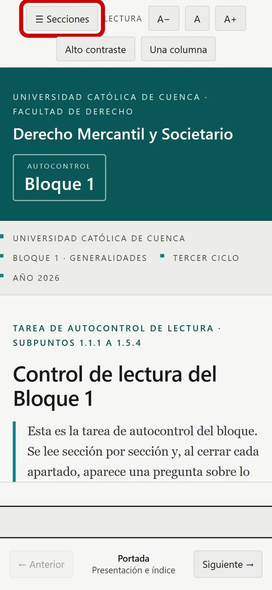
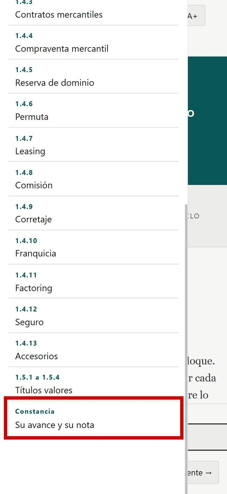
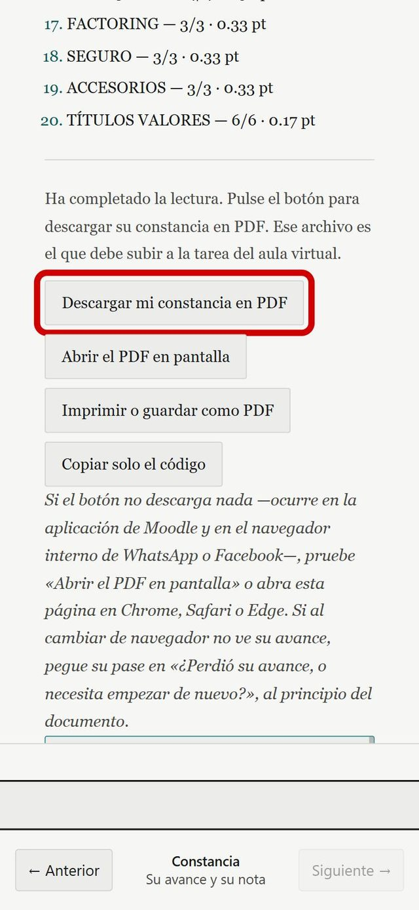
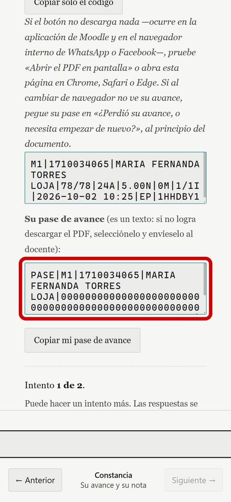

Cómo bajar su constancia en PDF
Autocontrol de lectura · Bloque 1
Si ya hizo la tarea, su trabajo no se perdió: está guardado en el aparato que usó. Solo falta bajar el archivo, y son pocos pasos.
Antes de empezar
- Entre desde el mismo celular o computadora, y el mismo navegador, donde contestó las preguntas.
- Abra el enlace en Chrome o Safari. No lo abra desde la aplicación de Moodle ni desde WhatsApp: ahí la descarga no funciona.
Su avance no depende de Moodle ni de WhatsApp: vive en el navegador. Por eso hay que abrir la página en el mismo navegador donde trabajó. Las capturas de esta guía son de un celular; en computadora se ve igual, solo más ancho.
1Abra el menú
Con la página abierta, toque el botón «Secciones», arriba a la izquierda.
Está marcado en rojo en la imagen.

2Vaya a «Constancia»
Baje hasta el final de la lista y toque «Constancia · Su avance y su nota».
Está marcado en rojo.
Ahí debe decir que ya respondió todos sus apartados.

3Descargue el PDF
Toque «Descargar mi constancia en PDF». El archivo se guarda en las descargas de su aparato.
Si no baja nada, toque «Abrir el PDF en pantalla»: se abre en otra pestaña y desde ahí lo guarda o lo comparte.

4Si no logra descargar
No pasa nada: más abajo está su «pase de avance», que es un texto.
Toque la caja marcada, copie todo el texto (o toque «Copiar mi pase de avance») y envíeselo al docente por mensaje.
Con ese texto el docente comprueba su nota.

Último paso: suba el archivo
En la tarea de Moodle, suba el archivo cuyo nombre empieza con «Constancia_», por ejemplo Constancia_..._(su cédula)_(su nombre).pdf.
No suba el libro entero impreso. Tiene muchísimas páginas y no trae su nota ni su código, así que no se puede comprobar.
La fecha límite es la que diga su tarea en Moodle.
Si algo falla
- Si al abrir la página no ve sus respuestas, probablemente entró desde otro navegador o aparato. Vuelva a entrar desde el que usó.
- Si nada de esto funciona, escríbale al docente y dígale qué aparato usa (iPhone, Android, Mac o Windows) y qué ve en pantalla. Puede mandarle una captura.
- Mientras tanto, guarde su pase de avance: es su respaldo.